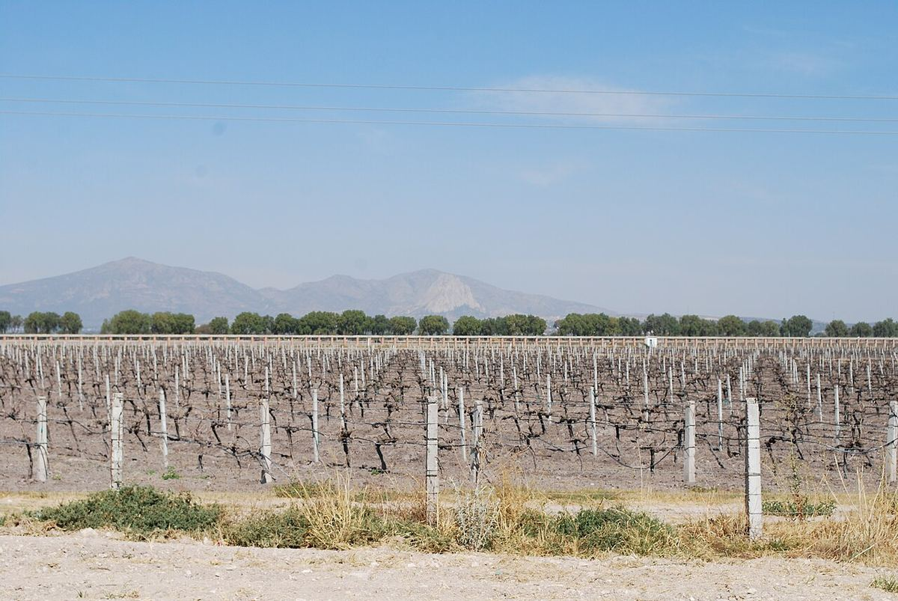

Mexique
Le Mexique est le berceau de la viticulture sur le continent américain, où la vigne arriva avec les conquistadors espagnols au XVIe siècle. Aujourd’hui, l’essentiel de son vin provient de Basse-Californie, en particulier du Valle de Guadalupe, même si la production progresse dans des zones d’altitude du centre et du nord du pays.

Histoire
Le Mexique fut le premier endroit du continent américain où l’on planta des vignes européennes. Après la conquête, les Espagnols avaient besoin de vin pour la messe et pour leur propre consommation et, en 1524, Hernán Cortés ordonna aux Espagnols qui recevaient des terres et des indigènes en encomienda de planter des vignes chaque année. La culture se répandit rapidement, mais la Couronne, soucieuse de protéger les exportations de vin de la péninsule, restreignit ensuite les nouvelles plantations et la production dans la colonie. La viticulture survécut néanmoins dans les haciendas et les missions religieuses. À Parras, dans l’actuel État de Coahuila, fut fondée à la fin du XVIe siècle l’hacienda qui donna naissance à Casa Madero, considérée comme la plus ancienne cave d’Amérique.
En Basse-Californie, les missionnaires jésuites puis dominicains et franciscains plantèrent la vigne dans leurs missions dès la fin du XVIIe siècle ; la mission de Santo Tomás, fondée par les dominicains à la fin du XVIIIe siècle, donna son nom à la cave Santo Tomás, établie à Ensenada en 1888. Au début du XXe siècle, des colons russes de la communauté religieuse molokane s’installèrent dans le Valle de Guadalupe, où ils cultivèrent céréales et vigne, et au cours des décennies suivantes des immigrants italiens fondèrent des entreprises qui allaient devenir de grands producteurs. Pendant une grande partie du XXe siècle, cependant, une large part du raisin mexicain servit à la production de brandy. Depuis la fin des années 1980, l’apparition de caves petites et moyennes tournées vers les vins de qualité a transformé le Valle de Guadalupe, aujourd’hui aussi une destination d’œnotourisme et de gastronomie.
Climat et régions
Bien qu’une grande partie du pays se trouve sous les tropiques, le Mexique possède des zones favorables à la vigne grâce à l’influence de l’océan ou à l’altitude. La Basse-Californie, au nord-ouest, concentre l’essentiel de la production de vin. Des vallées comme celles de Guadalupe, San Vicente, Santo Tomás, Ojos Negros et San Antonio de las Minas y connaissent un climat méditerranéen semi-aride, avec de faibles pluies hivernales et des étés secs et ensoleillés, tempérés par les brises fraîches du Pacifique. La rareté de l’eau et sa qualité, parfois un peu saline, constituent le principal défi.
Au centre et au nord du pays, la viticulture s’appuie sur l’altitude, qui compense la latitude par des nuits fraîches et de fortes amplitudes thermiques. Le Coahuila, avec la vallée de Parras ; le Querétaro, connu pour ses effervescents ; ainsi que le Zacatecas, l’Aguascalientes, le Guanajuato, le San Luis Potosí et le Chihuahua possèdent des vignobles de haute altitude, et dans plusieurs de ces zones les pluies d’été coïncident avec la maturation et exigent une conduite soignée.
Sols
Dans les vallées de Basse-Californie dominent des sols sableux et sablo-argileux issus de la décomposition du granite, pauvres en matière organique et bien drainés, avec des zones plus argileuses en fond de vallée. Dans les régions d’altitude de l’intérieur, les sols d’origine alluviale et volcanique sont fréquents.
Cépages et styles
Le Mexique produit surtout du vin rouge, au profil généralement mûr et au fruit intense, souvent avec des notes salines dans les vins de Basse-Californie. Le cabernet-sauvignon, le merlot, le tempranillo, la syrah, le grenache, le carignan, le malbec et la petite sirah sont très répandus, et le nebbiolo, introduit par des immigrants italiens, est devenu un cépage caractéristique du Valle de Guadalupe, même si les vins qu’il y donne sont très différents de ceux du Piémont. Les assemblages de plusieurs cépages sont fréquents. Parmi les blancs se distinguent le chenin blanc, le sauvignon blanc, le chardonnay et le colombard. Dans le Querétaro, on élabore des effervescents selon la méthode traditionnelle et en cuve close.
Réglementation
Le Mexique ne dispose pas d’un système d’appellations d’origine viticoles comparable aux systèmes européens. Les caves indiquent sur l’étiquette la vallée ou la région de provenance, et les associations de producteurs ont travaillé sur des normes de qualité et sur la reconnaissance d’indications géographiques pour les principales zones.